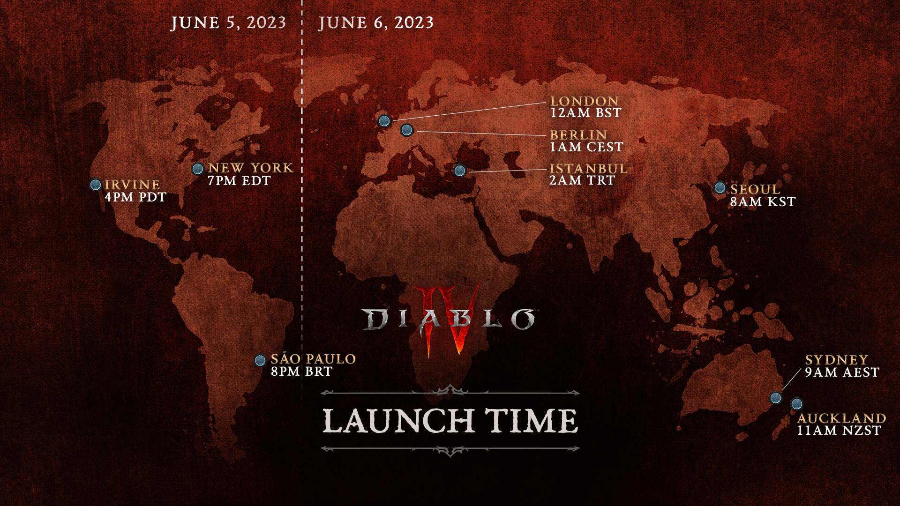

DIABLO IV
Diablo IV sale pronto: aquí encontrarás todo lo que necesitas saber
Santuario necesita que lo salven… ¿Responderás a su llamado el 6 de junio cuando se desate el infierno?
Lilith ha regresado a Santuario, invocada mediante un oscuro ritual tras su largo exilio. Antes de comenzar a recorrer las cinco descomunales regiones de Diablo IV en la piel de un bárbaro, druida, nigromante, pícaro o hechicero para acabar con la agonía que Lilith ha sembrado en el mundo que ayudó a crear, te animamos a leer detenidamente esta guía de lanzamiento para ayudarte a derrotar al mal.
El acceso anticipado de Diablo IV comenzará el 2 de junio a la 01:00 CEST para quienes hayan precomprado la Digital Deluxe Edition o la Ultimate Edition antes del lanzamiento oficial. Si quieres saber cuándo empezará tu viaje, consulta el mapa del acceso anticipado que encontrarás a continuación para descubrir la fecha y hora exactas de cada región.
El lanzamiento oficial de Diablo IV comenzará el 6 de junio a la 01:00 CEST. A partir de ese momento, podrá comenzar el viaje de los propietarios de cualquier edición de Diablo IV. Al igual que con el mapa del acceso anticipado, echa un vistazo al mapa que encontrarás a continuación para descubrir la fecha y hora exactas de cada región.
Mira el último vídeo de desarrollo de Dentro del juego
Durante el transcurso de la serie de vídeos Dentro del juego acompañarás a nuestros expertos de Diablo IV —miembros del equipo de desarrollo— mientras te guían por los elementos del juego.
El tercer vídeo de la serie es Tu clase, tu estilo. En él, exploramos cómo las decisiones del jugador impregnan la creación del personaje, las configuraciones, el equipo e incluso cómo prefieres afrontar la historia no lineal de Diablo IV.
Únete al director general de la franquicia Diablo Rod Fergusson, al diseñador jefe de clases Adam Jackson, a la productora jefe del juego Melissa Corning y al director del juego Joe Shely para descubrir cómo influirán tus decisiones en tu experiencia de juego e incluso en el propio Santuario.
Juega a tu manera en Santuario
A lo largo de tus andanzas en Diablo IV tomarás decisiones en todos los aspectos: la apariencia de tu personaje, las habilidades que usará para deshacerse de los sanguinarios esbirros del infierno o la forma en la que el equipo que encuentre mejorará sus facultades o transformará su aspecto.
Vamos a ver en detalle cómo contribuyen estos elementos a que puedas jugar a Diablo IV a tu estilo.

Árbol de habilidades: El árbol de habilidades te ofrece diversos estilos de juego para cada clase a través de habilidades, habilidades pasivas, mejoras y pasivas clave a medida que tu personaje sube de nivel y perfecciona sus facultades. Los puntos de habilidad se obtienen subiendo de nivel y consiguiendo recompensas de progreso de zona. Se pueden gastar hasta 5 puntos de habilidad para mejorar el rango de cada habilidad.
Nodos del árbol de habilidades: Cada clase tiene acceso a habilidades básicas, principales y definitivas, así como a las pasivas clave y otros tipos de habilidades únicos de su clase, como las de compañero, refriega, subterfugio y muchas más.
Habilidades básicas: Son las primeras habilidades a las que accede el jugador y se desbloquean en el nivel 2. Aparte de la creación del personaje, esta es una de las primeras decisiones que se tienen que tomar. Las habilidades básicas suelen ofrecer efectos adicionales como aumentar la eficacia de otras habilidades, proporcionar generación de recursos, aumentar la movilidad o añadir utilidad a tu personaje. Estas habilidades se pueden usar siempre y no tienen tiempo de reutilización ni coste de recursos.
Habilidades principales: Estas habilidades requieren un tiempo de reutilización tras su uso, pero agradecerás inmensamente tenerlas en tu arsenal. Las habilidades definitivas canalizan un inmenso poder y lo devastan todo a su paso.
Habilidades pasivas: Se desbloquean en el nivel 32 y modifican drásticamente el funcionamiento de tus otras habilidades, por lo que puedes ajustar tu estilo de juego con un objetivo unificado a medida que las desbloqueas.